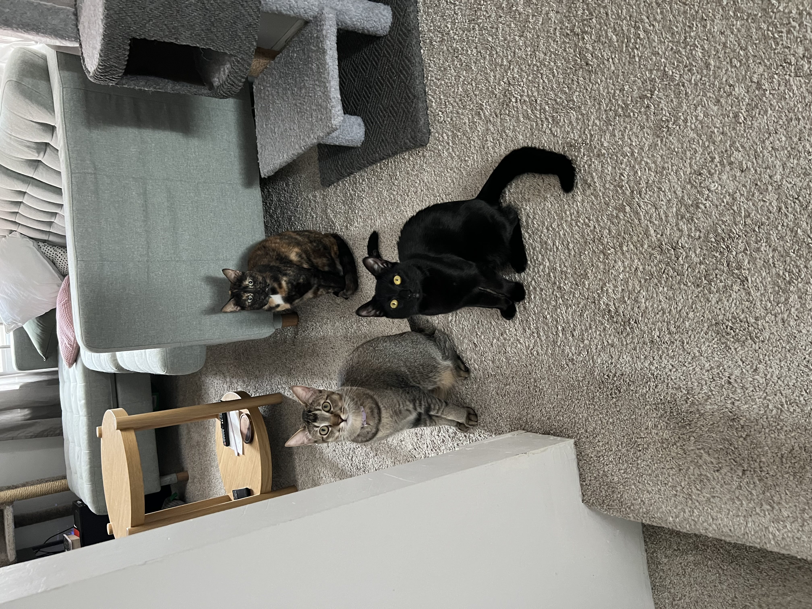
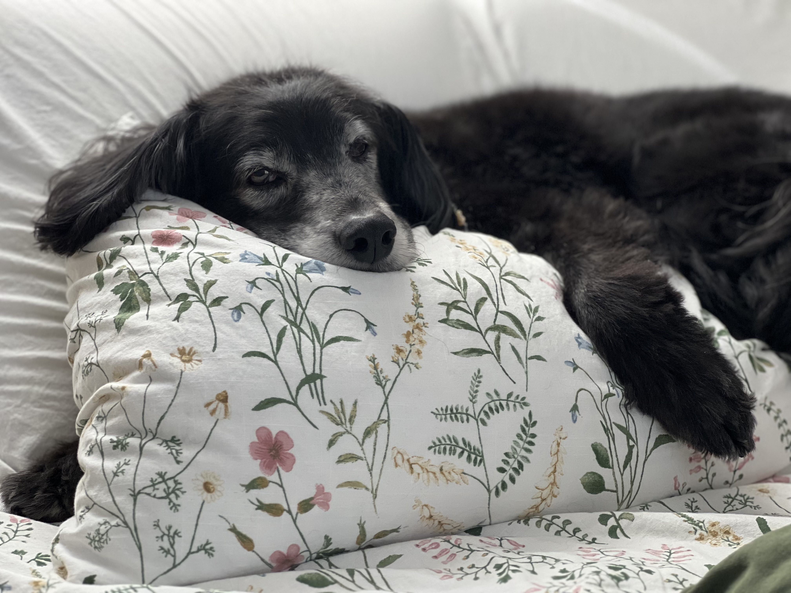
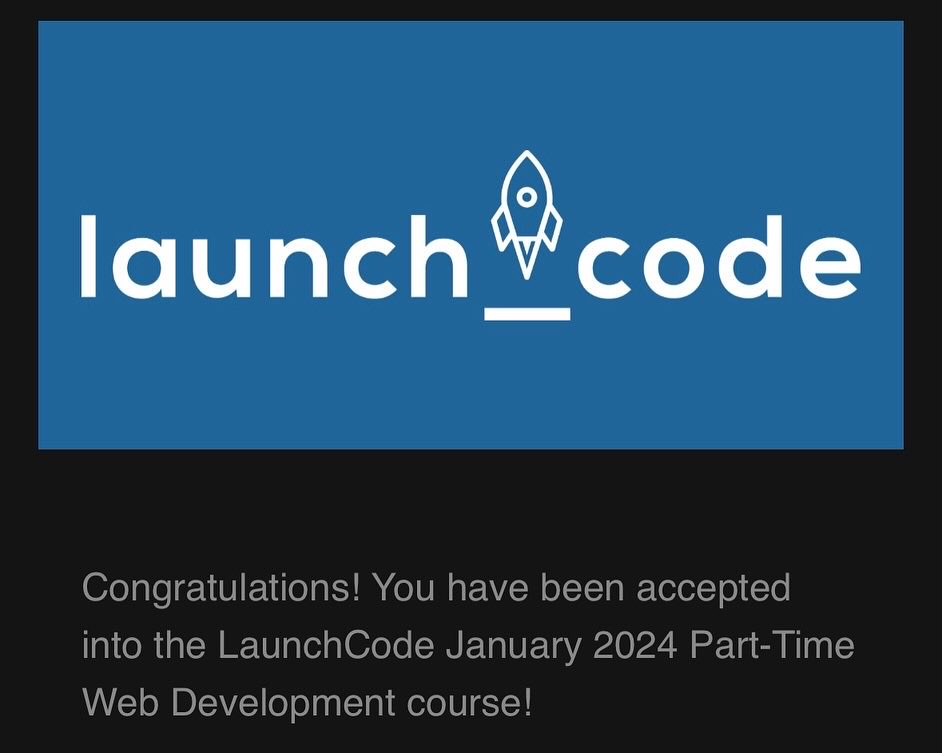

Rudy (left), Maisy (back), Phoebe (front)

Sarah laying in her favorite place (on top of any and all pillows)
Introduction
Hello, and welcome to this page that I created so that you could learn a little bit more about me. My name is Roger and I am 27 years old.
I live in St. Louis City and love learning the history behind my city and the buildings in my neighborhood. I am an avid PC gamer and while I'm
not amazing at any particular game I love playing games of all kinds. Some of my favorites to play right now have been Skyrim, Minecraft, and Call
Of Duty. I am also a big hockey fan. I of course cheer for the Blues but I could honestly want any hockey game and enjoy it. In addition to watching
hockey, I have also recently began collecting hockey cards.
When the weather gets warmer I love to garden. I have spent the last 3 years gardening every summer and trying to expand more and more each year.
For me it all started in 2021 when I started growing some basil and a cherry tomato plant. Since then it has expanded to multiple garden beds, all
hand built by me, full of tons of different kinds of herbs, onions, peppers, tomatoes, and more.
But enough about some of my hobbies, lets talk family. I live with my partner Amy and our amazing dog and 3 cats. Our dog's name is Sarah. She's 16 and
still a big ball of energy. She's my best friend and she follow me everywhere I go. Our cat's names are Maisy, Phoebe, and Rudy. Maisy is almost 2
and Rudy and Phoebe are about to turn 1. These three love to play and have fun. They are also all very loving and sweet.
Work History
I have done work in other industries over the years but nothing really stuck for me. When I was younger I worked for a property maintenance company
called Property Maintenance Plus. From 2013 to 2017 I worked here doing basically everything related to building and construction that you can imagine.
I painted/stained, I cut grass and did landscaping, I hung drywall and did demolition, replaced light fixtures, poured concrete. You name it, I probably
did it at least once.
After enjoying my time in property maintenance and learning a lot of valuable skills, it was time for a change. I had been touring a lot with the band
I played drums in so I needed a more flexible schedule. My friend worked at a local pizza place called St. Louis Pizza & wings and asked if I could
come help them out one night. They hired me on the spot as a delivery driver and I stayed there for 3 years from 2017 to 2020.
After 3 years in food service I wanted a job with better pay and benefits. I went from food right to finance and got a job as a Financial Service
Consultant at First Community Credit Union. I learned so many valuable skills there and really enjoyed the team I was on but the job just wasn't for me.
After almost a year there (2020-2021) I decided to go back to St. Louis Pizza & Wings until I could figure out what career path I wanted to take. I stayed
there until early 2023 when I decided to quit and take some time for myself which really proved to be a fantastic move. I finally decided then that I really
wanted to pursue a job in tech. That fall I applied for LaunchCode.
Me playing a live show in Indianapolis in 2016
A Lifetime As A Musician
For as long as I can remember I had always wanted to be a musician. I always wanted to play in a band and tour the world. I started
playing drums and guitar when I was 10. With next to no skill but a lot of passion, I began learning trying to learn songs on the drums
by all of my favorite bands and artists. When I was 13 I played my first show with my first band. That moment cemented what I had always
thought, my dream is to play music.
Fast forward, I am about to turn 17 and a buddy of mine says that his friends need someone to fill in on drums for a small tour.
Without even hearing their music I said yes. My dream had always been to go out on tour and I was finally getting a chance to do it.
I spent a week on the road with them and made so many memories. When we got home they offered me a position as the full time drummer
of their band. I happily accepted as those guys had become some of my best friends in less than a month. I loved the music and felt
excited about the future.
For almost 7 more years I played hundred of shows with that band and went on tons of self booked tours. Most dates were booked by myself
and our singer throughout the years. I was able to write and record a lot of music with them and make friends around the country. Many of
those friends I made are people that I still talk to to this day. I made thousands of unforgettable memories with my best friends and I
wouldn't trade it for anything.
For me, it finally came to an end in 2019 after a long trip away from home. Over the years my priorities had shifted. When I was 17 I didn't care
how long I was gone. As time went on I had more at home that I cared about than ever before. Roughing it with my best friends, while unforgettable
and where so many great memories came from, just didn't have the same appeal as it once did. After all of these years I was ready to try something
new and find something else I was passionate about.
Coding Journey
My coding journey so far has been an interesting one to say the least. It has been one filled with ups and downs but there has always been the
desire to push on and keep learning. I have always been interested in how websites and software work. I remember making a website on a free
website builder when I was younger and being amazed by seeing what I was doing come to life. I was never quite sure where to start my journey
but the eagerness to learn was always there.
When I met my partner over 5 years ago she was in this program called LaunchCode. She was learning web development and really enjoying it.
This lead me to start asking her a bunch of questions about web development and where to start. Thankfully she is extremely patient and she
answered all of my questions and gave me a bunch of great resources to check out. This really sparked my interest in development.
After checking out those resources I started going the self-taught route. I would learn little bits from everywhere I could including websites
YouTube tutorials. In an effort to gain a little bit more structure I started using SkillShare to learn. After a while, this method sort of
hit a dead end for me. About 6 months after that a friend of mine was starting a class that they had prepared as an instructor and invited me
to check it out. I took that class for a few months and learned so much but ultimately dropped the course. I had really struggled towards the
end of the course course and my confidence was shot. I wasn't too sure if I would keep pursuing coding or maybe try something else.
About two years later I had quit my job and wanted to take some time to try to find the right career path for myself. At this point I was 26 and
had no clue what I wanted to do. I was still extremely interested in programming and began fusing that interest with another interest of mine,
video games. I took a course on building 2D games using C# and Unity Game Engine. This re-sparked my interest in development and set me on a path
to really take a run at trying to make a career in tech. A few months later, with the help and support of my partner Amy, I applied for LaunchCode.

Screenshot of my LaunchCode acceptance email
LaunchCode And Beyond
As someone who struggles with self-confidence it's crazy to think that I am pursing something that even a couple years ago seemed so out of reach.
Taking on this challenge has already been enjoyable. Filling so many gaps in my previous leaning while also learning completely new concepts
and best practices is so rewarding. Not to mention, the feeling of accomplishment I get when I start seeing all of my hard work and problem
solving come together in a project.
I am really excited for the rest of this course. I can't wait to tackle what lies ahead and continue my coding journey. After this course, I would
like to be able to get a job in front end development. For my whole life I have been someone who enjoys being creative so I think that would be
a great fit for me.
On a different note I think that there is a lot of interesting opportunities for work in back end development. As I learn more about working on the
back end it has become more and more intriguing to me. I don't yet know a ton about the job opportunities that are available in back-end development
but the more I learn about what it can do the more interested I become with it.
Regardless of the direction that I want to take in my career, I think that it would be a lot of fun to learn more about game development. That is why
after this course I would like to learn either C# or C++. Those are the main languages used by Unity Game Engine and Unreal Game Engine respectively.
I really enjoyed following tutorials to create small games in Unity when I first learned about it. As an avid gamer and creative, I think being able
to really start from scratch and create my own 2D or 3D game would be a lot of fun.